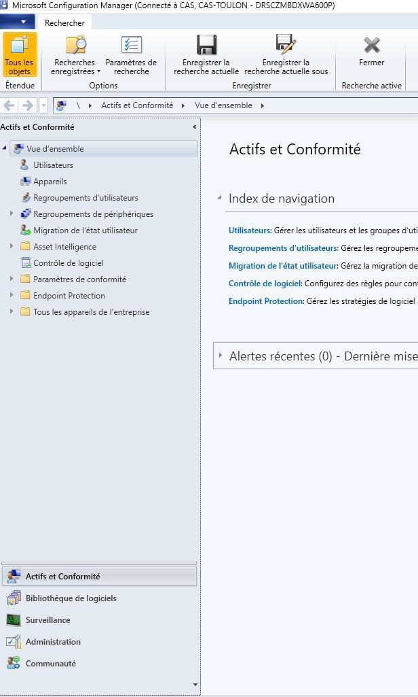
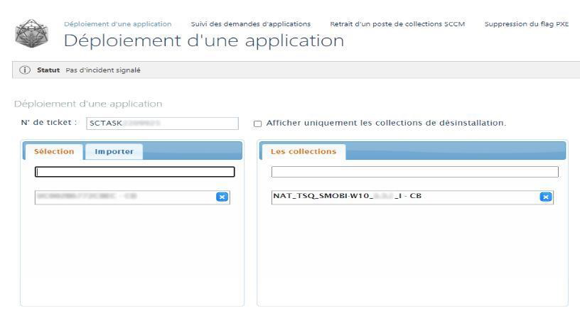

Environnement : Ministère des Armées (CNAD) - Haute Sécurité.
Dans un contexte de restriction forte, les utilisateurs ne peuvent installer aucun logiciel eux-mêmes. Mon rôle est d'assurer la mise à disposition d'environnements logiciels fonctionnels et sécurisés, notamment lors de demandes spécifiques ou de la migration vers Windows 11.
Contrôle de l'identité de l'utilisateur et de ses habilitations dans l'Active Directory. Ajout aux groupes de sécurité correspondants pour autoriser la descente applicative.
Utilisation de la console MECM/PSAUM. Identification de la machine cible et "Push" du paquet logiciel ou de la Séquence de Tâches (TSQ).
En cas d'échec (Monitoring Rouge) : Analyse des fichiers de Logs (Client SCCM) pour identifier l'erreur (Service arrêté, Cache plein) et relance du déploiement.
Aperçu des outils utilisés quotidiennement pour la gestion du parc.

